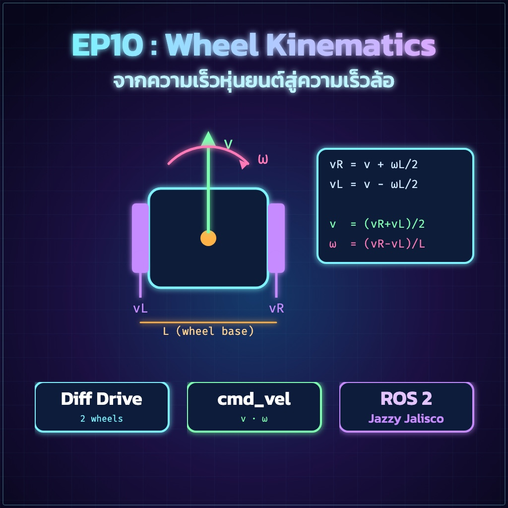
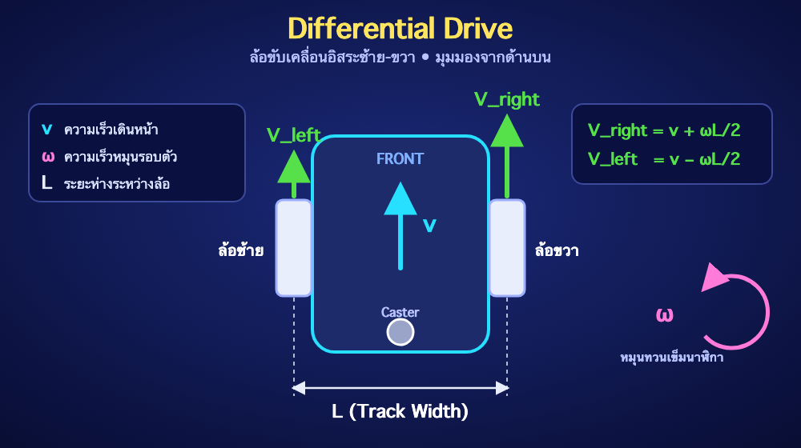
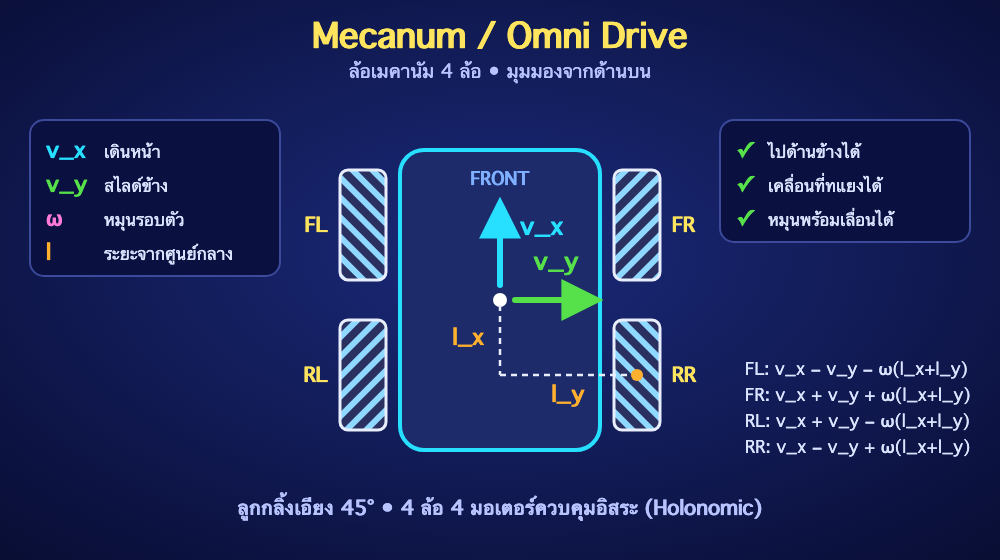
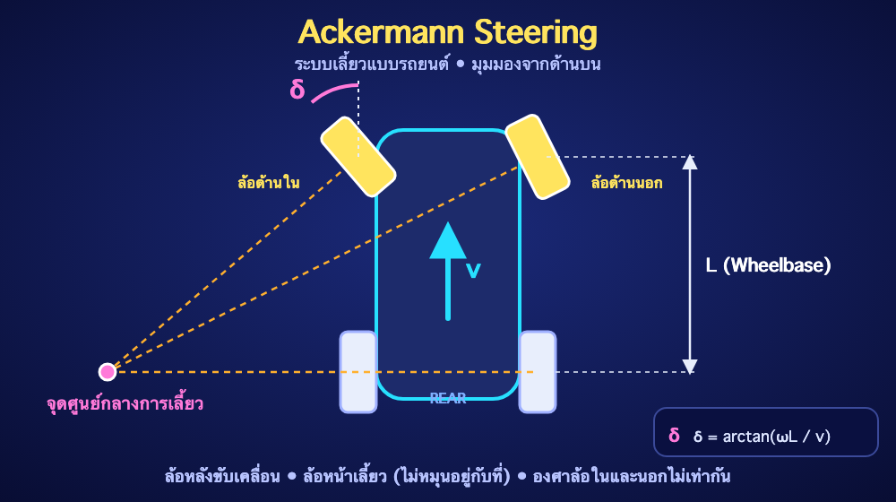

"แปลงคำสั่งความเร็ว (Twist) ให้กลายเป็นการหมุนของแต่ละล้อ"
ใน ROS 2 คำสั่งที่ควบคุมหุ่นยนต์ให้เคลื่อนที่จะมาในรูปแบบข้อความ geometry_msgs/Twist ซึ่งประกอบไปด้วยความเร็วแนวตรง (Linear Velocity - $v$) และความเร็วในการหมุน (Angular Velocity - $\omega$)
แต่ในระดับฮาร์ดแวร์ มอเตอร์ของเราไม่รู้จักคำสั่งเหล่านี้ Kinematics (จลนศาสตร์) จึงเป็นสมการคณิตศาสตร์ที่ใช้แปลง (Transform) ความเร็วรวมของหุ่นยนต์ ให้เป็นความเร็วของมอเตอร์แต่ละตัว โดยหุ่นยนต์แต่ละประเภทก็จะมีสมการที่แตกต่างกันออกไป
นี่คือรูปแบบที่ได้รับความนิยมที่สุดในหุ่นยนต์พื้นฐาน (เช่น หุ่นยนต์ดูดฝุ่น หรือ TurtleBot) ประกอบไปด้วยล้อขับเคลื่อนหลัก 2 ล้อ (ซ้าย-ขวา) และล้อประคอง (Caster wheel) หุ่นยนต์สามารถหมุนรอบตัวเอง (Zero-turning radius) ได้โดยการหมุนล้อซ้ายและขวาไปในทิศทางตรงข้ามกัน

$V_{right} = v + \left(\frac{\omega \times L}{2}\right)$
$V_{left} = v - \left(\frac{\omega \times L}{2}\right)$
หุ่นยนต์ที่ใช้ล้อประเภทนี้เรียกว่ารถ Holonomic ซึ่งหมายความว่ามันสามารถเคลื่อนที่ไปด้านข้าง (สไลด์ปู หรือ Strafe) หรือทแยงมุมได้ทันทีโดยไม่ต้องหันหน้าไปทางนั้น ล้อแต่ละล้อจะมีลูกกลิ้งเล็กๆ เอียงทำมุม 45 องศาติดอยู่รอบๆ มักใช้ล้อ 4 ล้อ ควบคุมแยกกันอิสระ 4 มอเตอร์

$V_{front\_left} = v_x - v_y - \omega(l_x + l_y)$
$V_{front\_right} = v_x + v_y + \omega(l_x + l_y)$
$V_{rear\_left} = v_x + v_y - \omega(l_x + l_y)$
$V_{rear\_right} = v_x - v_y + \omega(l_x + l_y)$
เป็นระบบการขับเคลื่อนแบบเดียวกับรถยนต์ทั่วไป (Non-holonomic) ล้อหลังทำหน้าที่ขับเคลื่อนไปข้างหน้า/หลัง (ด้วยมอเตอร์หลัก) ส่วนล้อหน้าทำหน้าที่บังคับเลี้ยวซ้าย/ขวา (มักใช้ Servo motor) ข้อเสียคือไม่สามารถหมุนอยู่กับที่ (Zero-turn) ได้ ต้องตีวงเลี้ยว

แตกต่างจากแบบอื่นตรงที่ต้องแปลงความเร็วหมุน $\omega$ ให้กลายเป็น มุมเลี้ยว (Steering Angle) $\delta$ ของ Servo:
$V_{motor} = v$ (มอเตอร์หลังหมุนตามความเร็ว Linear)
$\delta = \arctan\left(\frac{\omega \times L}{v}\right)$ (มุมเลี้ยวล้อหน้า)
cmd_vel ให้มอเตอร์ทำงาน ใน EP ถัดไป เราจะนำสมการ Differential Drive มาเขียนลงใน ROS 2 เพื่อให้หุ่นยนต์ของเราวิ่งได้จริง!